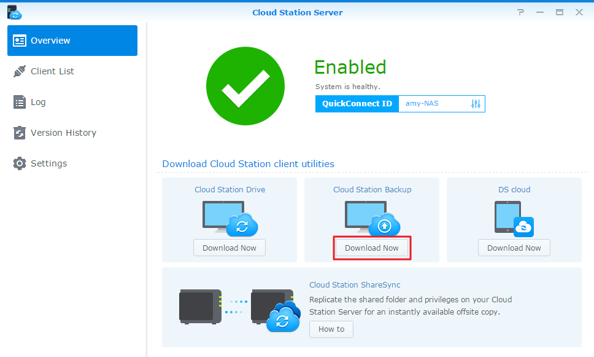

Przegląd
Cloud Station Server to międzyplatformowe, zaawansowane oprogramowanie synchronizacyjne, które umożliwia użytkownikom inteligentniejsze tworzenie kopii zapasowych danych przechowywanych na komputerach osobistych. Rozwiązanie Cloud Station Backup działa natychmiast i oszczędza przepustowość sieci, zapewniając lepszą ochronę po poprzez tworzenie do 32 historycznych wersji pojedynczego pliku.
Konfiguracja aplikacji Cloud Station Server na serwerze Synology NAS
- Przejdź do Centrum pakietów, znajdź pakiet Cloud Station Server, a następnie kliknij przycisk Instaluj.
- Włączanie aplikacji Cloud Station Server.
- Przejdź do pozycji Przegląd i kliknij Pobierz teraz w obszarze Cloud Station Backup. (Aplikację Cloud Station Backup można także pobrać z Centrum pobierania Synology). 
- Na komputerze uruchom instalator i postępuj zgodnie z instrukcjami, aby zainstalować Cloud Station Backup.
- Po zakończeniu instalacji uruchom aplikację Cloud Station Backup na komputerze. Kliknij przycisk Rozpocznij teraz.
- Wprowadź adres serwera Synology NAS z uruchomioną aplikacją Cloud Station Server (lub identyfikator QuickConnect ID), nazwę użytkownika i hasło. (Można również kliknąć ikonę wyszukiwania po prawej stronie, aby automatycznie wyszukać inne urządzenia Synology NAS w sieci lokalnej.) Kliknij Dalej.
- Wybierz źródło tworzenia kopii zapasowych i odznacz podfoldery, których nie chcesz synchronizować.
- Wybierz folder na urządzeniu Synology NAS, klikając Wybierz. Aplikacja Cloud Station Backup utworzy folder kopii zapasowej w wybranym miejscu docelowym, nadając mu nazwę komputera użytkownika.
- Kliknij Reguły tworzenia kopii zapasowych, aby ustawić filtry lub reguły synchronizacji.
- Kliknij Dalej, aby wyświetlić ustawienia kopii zapasowej, a następnie kliknij Zrobione.
- Postęp operacji tworzenia kopii zapasowej można śledzić w głównej aplikacji.


Pobieranie lub przywracanie poprzednich wersji zsynchronizowanego pliku z Cloud Station Server
- Przejdź do pozycji Cloud Station Server > Historia wersji i znajdź plik lub folder, który chcesz odtworzyć.
- Wybierz plik do pobrania i kliknij Działanie. Kliknij Przeglądaj poprzednie wersje. Jeśli plik został przypadkowo usunięty lub usunięty z komputera, możesz kliknąć Przywróć, aby go przywrócić.
- Wybierz wersję pliku, która ma być pobrana, i kliknij Pobierz. Jeśli masz pewność, że wybrana wersja ma zostać przywrócona, możesz też kliknąć przycisk Przywróć, a bieżąca wersja pliku zostanie nadpisana.


5. Inne sposoby ochrony danych
Aby dowiedzieć się więcej o sposobach ochrony i tworzenia kopii zapasowych danych, kliknij tutaj. Zostaną wyświetlone poradniki dotyczące innych usług kopii zapasowych oferowanych w systemie DSM.